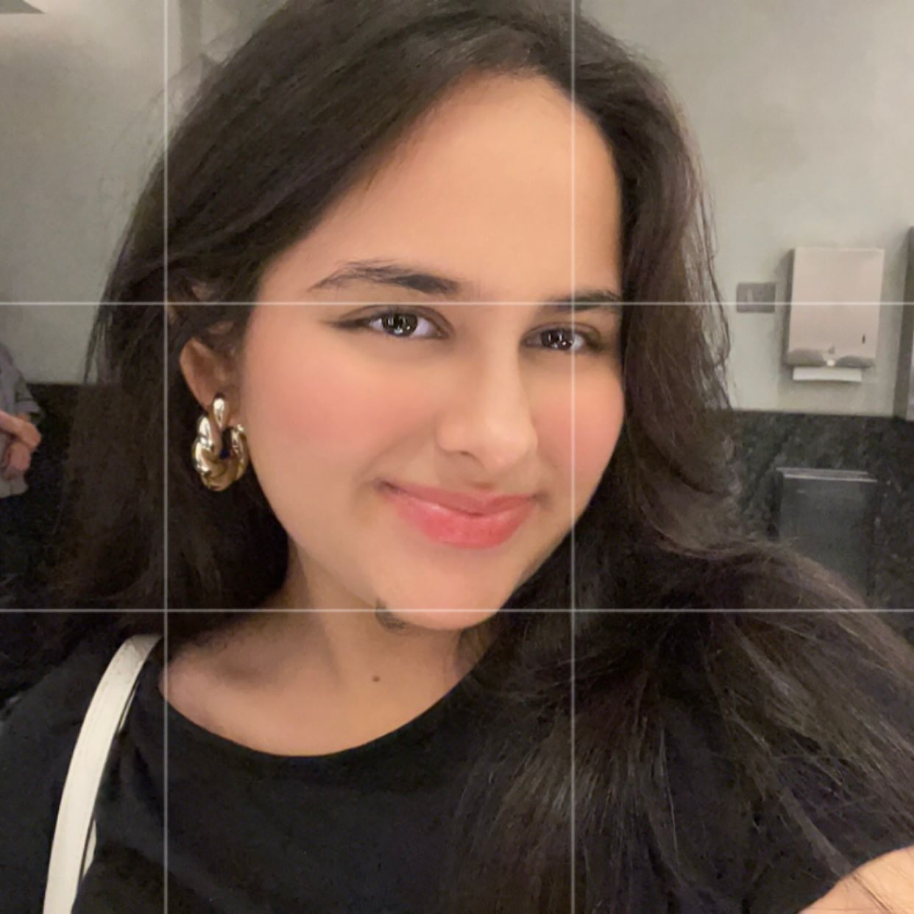
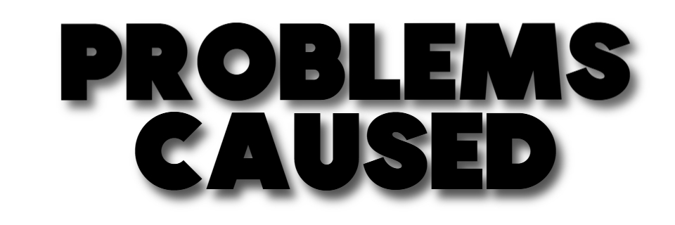
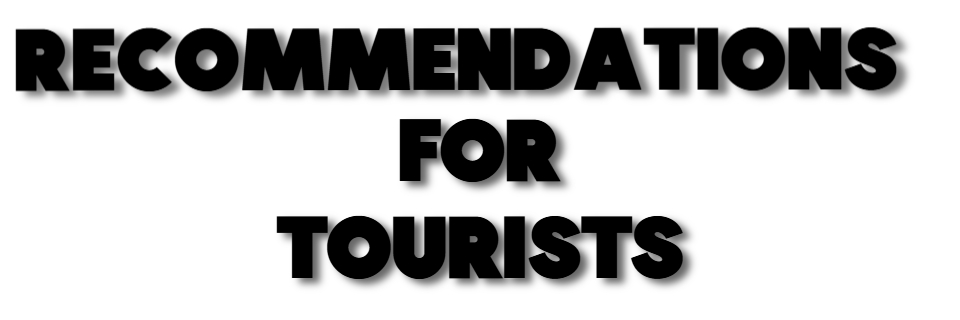

Intro
Welcome to our project on the Impact of Tourism on Coastal Ecosystems in Goa. Goa, celebrated for its stunning beaches and vibrant culture, attracts millions of tourists every year. However, this influx of tourism poses significant challenges to its coastal ecosystems, jeopardizing marine life and fragile habitats. Our team, composed of four passionate students working on our Global Perspectives IGCSE project, is dedicated to raising awareness and advocating for the conservation of these ecosystems. We have chosen to investigate how tourism affects Goa’s coastal environment, with a focus on the destruction of habitats, pollution, and the impact on critical species such as the olive ridley turtles.
Through this initiative, we aim to explore how tourism can coexist with conservation efforts in Goa and inspire others to consider sustainable practices for preserving these unique ecosystems.
We are a group of four students passionate about environmental conservation and raising awareness about these issues. Our project investigates the effects of tourism on Goa’s coastal environment, with a particular focus on habitat destruction, pollution, and the impact on critical species such as the olive ridley turtles.
We are a group of four students working together on our Global Perspectives IGCSE project, focusing on the Impact of Tourism on Coastal Ecosystems in Goa. As residents of Goa, we have witnessed the allure and vulnerability of its coastal environments. Our motivation for choosing this topic stems from our shared passion for environmental conservation and our desire to make a difference. We aim to investigate the effects of tourism on Goa's coastal habitats, specifically on issues such as habitat destruction, pollution, and the vulnerability of species like the olive ridley turtles.
We believe that raising awareness and promoting conservation is key to ensuring that Goa’s unique coastal ecosystems remain intact for future generations to enjoy.
Work
What We’re Doing
For our project, we set out to understand the impact of tourism on Goa’s coastal ecosystems and explore ways to promote their conservation. As residents of Goa, we feel a personal responsibility to preserve its natural beauty and rich biodiversity for future generations. The rapid increase in tourism has significantly affected critical habitats, including olive ridley turtle nesting sites and coral reefs. These ecosystems face threats from pollution, habitat destruction, and human interference.
To address these challenges, we aim to raise awareness among locals and tourists about the need for sustainable practices. A significant part of our initiative involved designing and distributing posters highlighting the threats posed by irresponsible tourism. These posters, which emphasized the vulnerability of turtle nesting sites and coral reefs, were shared with shack owners along the beaches and displayed to tourists. By doing so, we encouraged individuals to reflect on their actions and adopt environmentally friendly behaviors, such as reducing litter and avoiding disturbance to sensitive habitats.
Additionally, this website was created as a comprehensive platform to share our findings, showcase the valuable insights gathered during our research, and inspire sustainable tourism practices. Through this project, we aim to foster collective action and educate a broader audience about how small, mindful actions can contribute to safeguarding Goa’s unique coastal ecosystems.
Our Work Process
Our work process combined extensive online research with hands-on fieldwork to gain a comprehensive understanding of the issue. Since Goa is both our home and the subject of our research, we had the advantage of being familiar with its coastal areas and ecosystems. However, we wanted to go beyond general observations to gather concrete data and expert opinions.
We began by conducting thorough online research to understand the scope of the environmental challenges caused by tourism and to identify key organizations and individuals involved in conservation efforts. Armed with this knowledge, we embarked on field visits to observe the direct effects of tourism on coastal ecosystems. We visited several crucial sites, such as the Morjim Turtle Conservation Centre, where we learned about the steps being taken to protect olive ridley turtles during their nesting season. This visit gave us a firsthand understanding of the challenges faced by conservation teams, such as light pollution and beach erosion.
To deepen our understanding further, we conducted interviews with a representative from the Forest Department, who provided valuable insights into government-led initiatives and the legal frameworks in place for environmental protection. We also met with specialists from coral rehabilitation and protection centers, which shed light on the delicate balance required to restore and maintain coral reefs. Another important field visit was to a hatching site in South Goa, where we witnessed conservation efforts in action and understood the painstaking measures taken to protect turtle hatchlings.

In addition to these site visits, we consulted our teacher, a marine biologist, whose expertise helped us grasp the long-term ecological consequences of unchecked tourism. They also guided us in framing practical recommendations for sustainable tourism practices.
Throughout the project, we encountered several challenges, particularly the lack of resources and contacts to facilitate interviews and site visits. Initially, finding reliable sources and gaining access to conservation sites proved difficult. However, with extensive research and persistence, we successfully connected with the right individuals and organizations. These connections not only enriched our project but also gave us a deeper appreciation of the collaborative efforts required for environmental conservation.
This meticulous process allowed us to create impactful visuals and actionable recommendations that we hope will resonate with tourists, locals, and policymakers alike. By combining theoretical research with practical insights, we aim to make a meaningful contribution to the conservation of Goa’s coastal ecosystems.
About

Hi, I’m Mrinaank, an IG2 student at Paradise School, Goa. Leading our project on Goa’s coastal ecosystems, I ensured my team had clear roles, facilitated brainstorming sessions, guided research, and refined specialist interviews. I also oversaw the awareness poster and tracked progress to keep us on course.
This project allowed me to strengthen my leadership skills while deepening my understanding of the challenges facing Goa’s ecosystems. Seeing my team’s dedication and our collective impact was incredibly rewarding, and it has inspired me to continue working toward preserving this incredible environment.
_______________________________________________________________________
Hi, my name is Zeus. I’m a IGCSE grade 10 student at Paradise School Goa. For this project, I’ve contributed by helping my peers find information, talking to experts at their workplaces, taking pictures for the website and gaining valuable information to lead this project to success.
My favorite part of this project was getting to see how real world work experiences are, getting to know how the experts work and think, and working with one of my best friends Mrinaank, the leader.
Through this experience, I hope to inspire tourists to be more mindful with their wastage on the beach. I would also like to spread awareness about how harming these turtles injures the natural cycle of the ecosystem and their environment. These animals were here long before us, it's their home too.
_______________________________________________________________________

Hi, I’m Jiah Khanna, an IG2 student at Paradise School, Goa. As part of our Global Perspectives group project, I played an integral role in ensuring our success. My contributions included conducting the foundational research to give our team a strong starting point, reaching out to experts to gather valuable insights, and managing our social media presence.
By handling these tasks, I aimed to ensure our project not only had credible information but also reached and engaged a wider audience. I’m proud to have been a part of this meaningful journey with my team!
_______________________________________________________________________
Hi, I’m Noor, an IG2 student at Paradise School, Goa. As part of our group project on the impact of tourism on Goa’s coastal ecosystems, I took an active role in researching the conservation of olive ridley turtle nesting sites, learning the struggles of the coral ecosystems, and drafting key sections for our website. I collaborated with my team to design awareness posters for tourists and locals, participated in interviews with experts such as representatives from the Forest Department and coral rehabilitation centers, and analyzed our findings to propose actionable solutions. Additionally, I helped present our ideas effectively to ensure our message was clear and impactful.
This project was a transformative experience for me, as it not only allowed me to strengthen my teamwork, communication, and organizational skills but also gave me a deeper understanding of the delicate balance required to protect Goa’s environment. Seeing the positive responses from both locals and tourists to our efforts was incredibly rewarding. It reinforced my commitment to advocating for sustainable tourism and preserving the natural beauty and biodiversity of this region for future generations.
_______________________________________________________________________
Information
The of Tourism on Goa’s Coastal Ecosystems and Coral Conservation Efforts
Tourism is a vital pillar of Goa’s economy, especially after the decline of the mining industry. However, while tourism sustains livelihoods and fosters cultural exchange, it also poses significant challenges to Goa’s coastal ecosystems. Coral reefs are among the most vulnerable to the pressures of tourism. Understanding the problems caused by tourists, the efforts of coral conservationists, and actionable steps to minimize damage is essential to fostering a sustainable relationship between tourism and the environment.

Problems Caused by Tourism
While tourists rarely engage directly in activities that harm coral reefs, their indirect impact is considerable. Plastic pollution from snorkeling, fishing, and other recreational activities accumulates in coastal areas, eventually breaking down into microplastics. These microplastics embed themselves in coral reefs, weakening their structure and disrupting marine biodiversity.
Excessive boat traffic in coastal waters is another significant issue. The constant movement of boats increases water temperatures, which can stress coral reefs and lead to coral bleaching—a phenomenon where corals lose their vibrant color and vital symbiotic algae, ultimately threatening their survival. Coral bleaching not only harms the reef but also disrupts the entire marine ecosystem that depends on it.
This information is taken from out interviews with Ashel Unger, and Venkatesh Charloo
Coral Conservation Efforts
Organizations like Coastal Impact are at the forefront of restoring and protecting Goa’s marine ecosystems. One of their key initiatives involves transplanting coral beds, which act as nurseries for artificial reefs. These transplanted coral beds not only restore damaged natural reefs but also enhance biodiversity, creating healthier marine environments. This increased biodiversity benefits local fishermen by improving fish stocks, creating a positive ripple effect on the local economy.
Another innovative approach involves the use of ceramic tiles for coral transplantation. Coral fragments are attached to the underside of these tiles, and the tiles are placed in the ocean to facilitate coral growth. Regular monitoring ensures that algae, which can choke the corals, are removed, allowing the coral to thrive. Projects like these, initiated by Coastal Impact over the past five years, showcase how consistent efforts can contribute to coral restoration.
Effect of Tourism on Olive Ridley Turtle Nesting Sites
Tourism in Goa has significantly impacted the nesting sites of olive ridley turtles, a vulnerable species that relies on the region’s sandy beaches for reproduction. While tourism boosts the local economy, its rapid expansion has led to habitat destruction, making it increasingly difficult for these turtles to lay eggs and for hatchlings to survive.
One of the most serious threats is artificial lighting from beachside resorts, restaurants, and nightlife. Olive ridley hatchlings rely on the natural light of the moon to guide them toward the sea, but excessive artificial lighting confuses them, causing them to move inland instead of toward the water. This dramatically lowers their survival rate, as they become easy prey for predators or die from exhaustion before reaching the ocean. Additionally, bright lights disturb nesting females, making them abandon their nesting attempts altogether.
The growing popularity of beach tourism has also led to increased human activity in areas crucial for turtle nesting. Tourists frequently walk through nesting zones, unknowingly damaging eggs buried under the sand. Many visitors are unaware of conservation rules and disturb nesting sites by setting up bonfires, riding vehicles on the beach, or simply leaving behind litter. Plastic waste, particularly bags and fishing nets, poses a severe risk, as turtles often mistake it for food, leading to fatal consequences.
Another major issue is the lack of enforcement of protective measures. Although certain beaches, like Morjim and Galgibaga, are designated as turtle nesting sites with restricted access, many tourists ignore these regulations. Some disturb nesting turtles for photographs or enter restricted zones despite warnings from conservationists. Authorities face challenges in ensuring compliance due to limited resources and a constant influx of visitors.
While conservation efforts are in place, such as protective hatcheries and awareness programs, the long-term survival of olive ridley turtles in Goa depends on a stronger balance between tourism and environmental responsibility. Sustainable tourism practices, such as controlled beach lighting, strict enforcement of protected areas, and increased public awareness, are essential in ensuring that these turtles continue to nest safely along Goa’s shores.

Recommendations for Tourists
Tourists visiting Goa can play a critical role in minimizing harm to coastal ecosystems by adopting environmentally conscious behaviors. Key actions include:
Avoiding Plastic Waste: Dispose of waste responsibly and reduce the use of single-use plastics, especially during water-based activities.
Supporting Responsible Operators: Engage with certified eco-friendly operators for activities like scuba diving, snorkeling, and eco-tourism. These operators adhere to environmental standards, ensuring minimal harm to marine ecosystems.
Minimizing Boat Traffic Impact: Tourists can opt for shared or non-motorized boats and support operators who use eco-friendly practices to reduce their environmental footprint. Avoid unnecessary boat trips in sensitive areas to help prevent stress to coral ecosystems. Reducing boat traffic can also lower water temperatures, mitigating the risk of coral bleaching.
Monitoring Personal Waste: Tourists can take inspiration from eco-conscious practices such as carrying reusable water bottles, avoiding unnecessary purchases of packaged goods, and even taking responsibility for their trash by bringing it back home. Awareness of individual waste production can significantly reduce the burden on local waste management systems.
How Awareness Can Help
Spreading awareness about sustainable tourism practices is crucial for long-term conservation. Conservationists recommend the following strategies to educate and involve tourists:
Marketing Campaigns: Use social media, hoardings, and television to promote responsible tourism and highlight eco-friendly activities.
Enforcing Standards: Conduct regular checks to ensure operators meet environmental guidelines. Penalize repeat offenders to encourage compliance.
By taking these measures, tourists can enjoy Goa’s natural beauty while actively contributing to the preservation of its unique coastal ecosystems. Coral conservationists like Venkat Charloo and Ashel and their team at Coastal Impact are making strides in restoring balance, but their efforts require support from both locals and visitors to ensure a sustainable future for Goa’s marine life.
Gallery